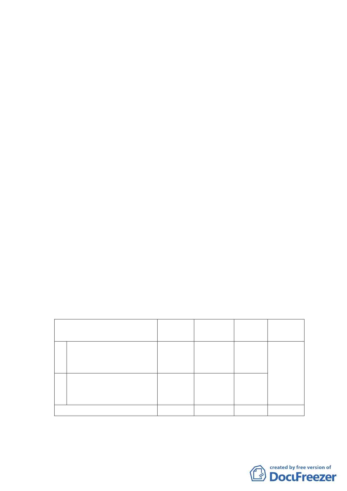

園用地及抽水站用地為機場用地主要計畫案
案情概要說明：
一、計畫範圍：
本計畫區位於民權東路與敦化北路交會處西北側，臨松
山機場南側之航站入口處，現為公園用地及抽水站用地。計
畫面積為9,968平方公尺。
二、計畫緣起與目的：
松山機場自97年開放兩岸直航，及與虹橋、羽田、金浦
機場對飛後，即成為重要商務、區域導向之首都商務機場。
為改善周邊景觀並充實空間機能，交通部民用航空局即以
「松山機場整體規劃」案重新檢討機場定位及未來發展策
略，全案業經行政院核准在案。
為塑造機場入口意象，需重新規劃機場內加油站、大客
車停車場及民航局第二辦公室；機場外市政府工務局水利處
辦公室及公園處苗圃亦需配合搬遷。擬變更水利處辦公室及
公園處苗圃所屬之機關用地及公園用地為機場用地，以利整
體空間規劃；案經交通部報請內政部同意後，爰依都市計畫
法第27條第1項第4款規定辦理變更都市計畫。
三、變更主要計畫內容：
變更位置
原計畫 新計畫
松山區濱江段四小段
1 298-1、308、309及311 公園用地 機場用地
地號等4筆土地
2
松山區濱江段四小段
297、301及302地號等3
筆土地
抽水站
用地
機場用地
合計
面積
（㎡）
8,271
1,697
變更理由
配合機
場發展
需求及
型塑國
門意象
9,968
四、全案係市府102年12月2日府都規字第10203159203號函送到
會，並自102年12月3日起公開展覽30日。
-8-